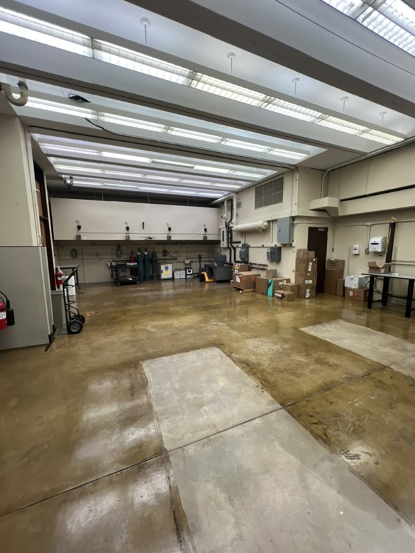
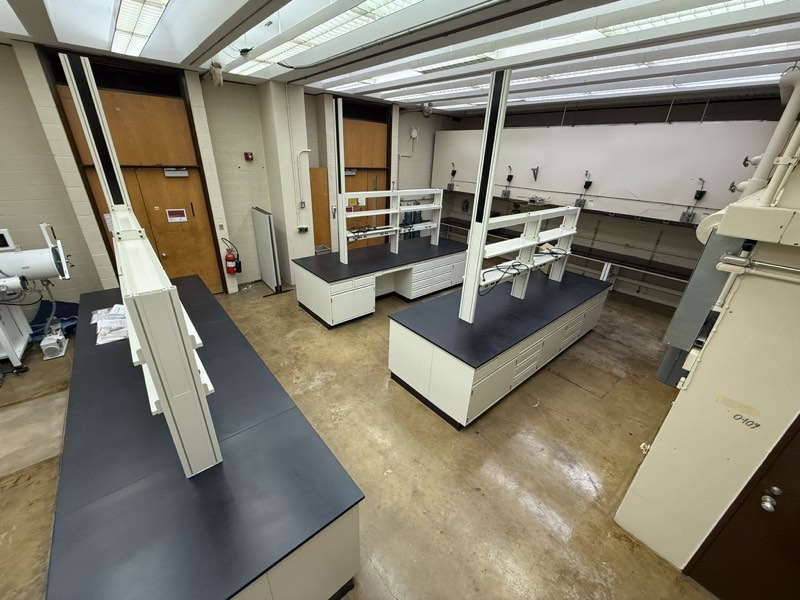

Facilities
The group's laboratories are in Wean Hall on the main Carnegie Mellon campus in Pittsburgh, Pennsylvania.
Our main synthesis laboratory (Wean 3314) is equipped for solid state chemistry: numerous furnaces, an inert-atmosphere glovebox, and equipment for both hot and wet chemical synthesis. A dedicated growth laboratory (Wean 3018) houses the AutoFlux automated crystal growth platform. For low-temperature characterization, the group operates a Quantum Design Physical Property Measurement System for transport, magnetometry, and thermodynamic measurements.
We also make use of the Materials Characterization Facility within the Department of Materials Science and Engineering, whose diffraction and microscopy instruments bolster our synthetic work.

